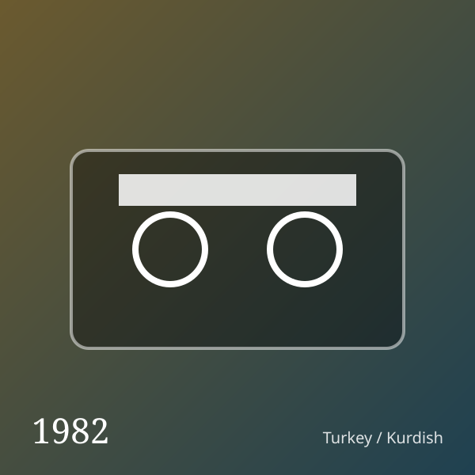

cassettes from the 1982–91 Kurdish-language ban

Background: families hid tapes in their own language in gardens and charcoal stores. Sources: https://theatticmag.com/reports/2369/on-the-trails-of-a-banned-language.html
Music made where it wasn't wanted, and songs that kept the score.

Background: families hid tapes in their own language in gardens and charcoal stores. Sources: https://theatticmag.com/reports/2369/on-the-trails-of-a-banned-language.html